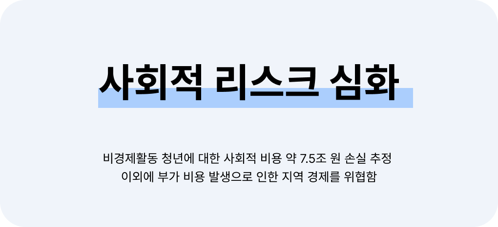
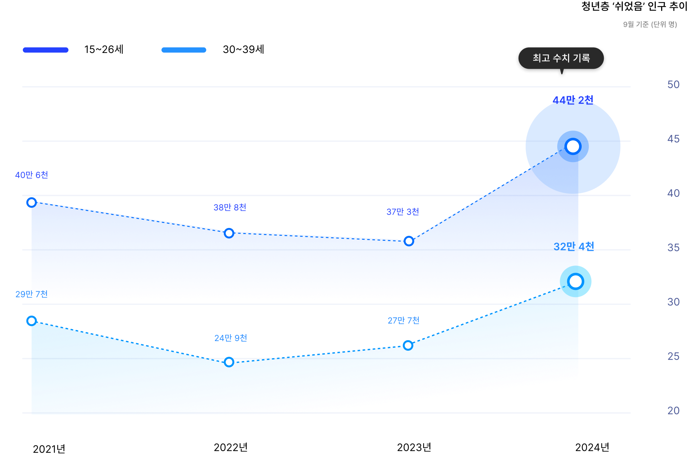
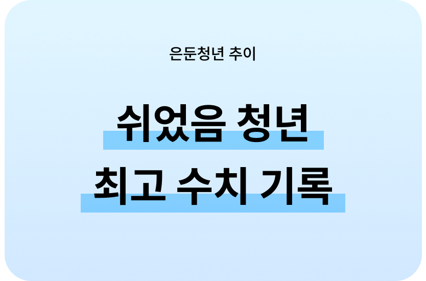
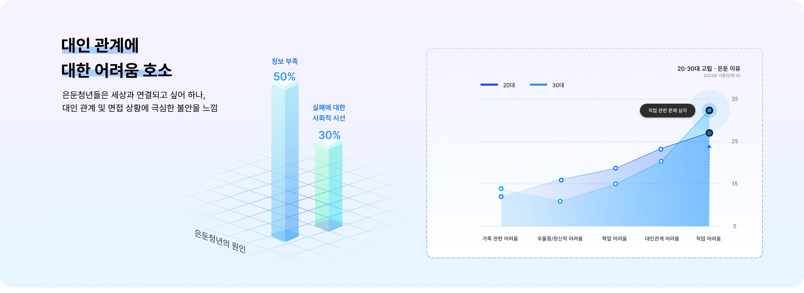
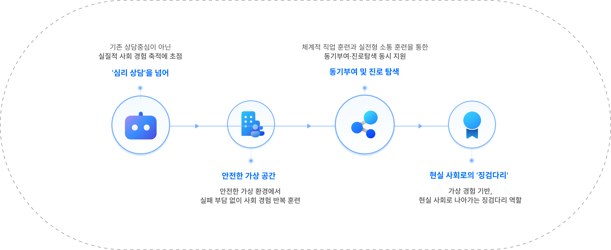

Step
to
Reality
사회 적응 능력 향상
가상 환경에서 실패의 부담 없이 반복
훈련함으로써 고립 청년들의 자존감을
회복하고 사회 적응력을 높입니다.
은둔청년들을 위한 ‘그로우 오피스’ 서비스 소개
[Grow office]의 서막을 알립니다.
가볍지 않은 문제, 사회가 가져야 할 크나큰 관심 모든 문제가 결합되어 있습니다.
우리와 함께 은둔청년에 관한 문제에 관심을 가져주세요. 파동의 이야기 시작됩니다.
먼저 우리가 왜 이 사업에 주목해야 하는지,
그 차가운 현실부터 짚어보겠습니다.






사회 적응 능력 향상
가상 환경에서 실패의 부담 없이 반복
훈련함으로써 고립 청년들의 자존감을
회복하고 사회 적응력을 높입니다.
개인 맞춤형 훈련
객관적인 행동 데이터를 바탕으로
정량적인 분석 결과를 제공하여
체계적인 자기 성찰이 가능하게 합니다.
지역과 사회 문제 해결 기여
지역 은둔 청년의 사회화 기여를
시작으로, 향후 국가적인 은둔 청년 문제
해결을 위한 공공 콘텐츠로서의 가치를
창출합니다.